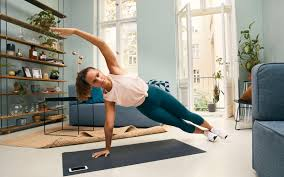
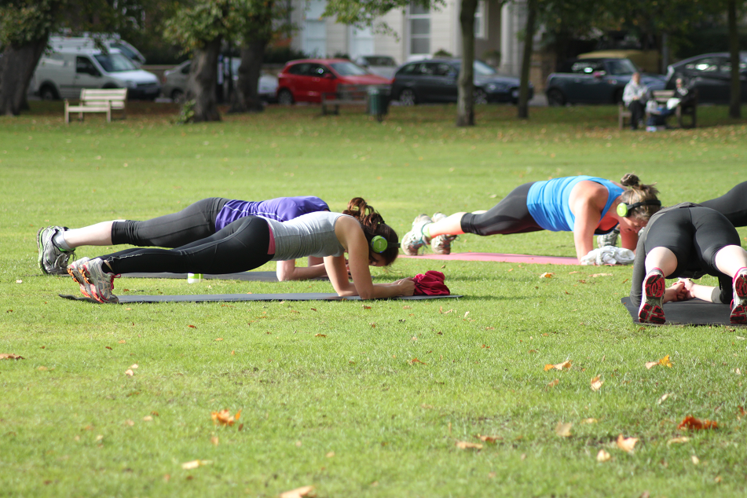

4/15/20
30 Moves to Make the Most of Your At Home Workout

There are really only two ways I'm coming out of this self-quarantine: super-ripped or in dire need of a diet. As the coronavirus outbreak leaves millions of people hunkered down at home and state-wide lockdown orders close all nonessential businesses, many of us are left without access to our usual gyms, workout studios and even parks. Switching to a home workout routine isn't easy -- it takes some space and a lot of intrinsic motivation -- but in light of the COVID-19 outbreak, many fitness experts, gyms, apps and studios are doing their part to help us stay in shape. And establishing a workout routine could, most importantly, ease anxiety related to coping with the pandemic.
Read more...
3/26/20
Gym closed? Here are some of the best home workout options

There are really only two ways I'm coming out of this self-quarantine: super-ripped or in dire need of a diet. As the coronavirus outbreak leaves millions of people hunkered down at home and state-wide lockdown orders close all nonessential businesses, many of us are left without access to our usual gyms, workout studios and even parks. Switching to a home workout routine isn't easy -- it takes some space and a lot of intrinsic motivation -- but in light of the COVID-19 outbreak, many fitness experts, gyms, apps and studios are doing their part to help us stay in shape. And establishing a workout routine could, most importantly, ease anxiety related to coping with the pandemic.
Read more...
3/31/20
The best free virtual workouts

At-home fitness is more important now than ever. With more people working from home and practicing social distancing, keeping fit and staying active requires a unique approach — and one that's not as easy as just frequenting a local gym or fitness studio (of which are now closed). But while it's important to stay healthy right now, we understand that paying for a fitness service may seem non-essential to your monthly budget. Doling out monthly dues for a multi-level gym with free weights, treadmills, and access to personal trainers is one thing but ponying up the money for access to a streaming video in your living room may not seem as viable an option.
Read more...